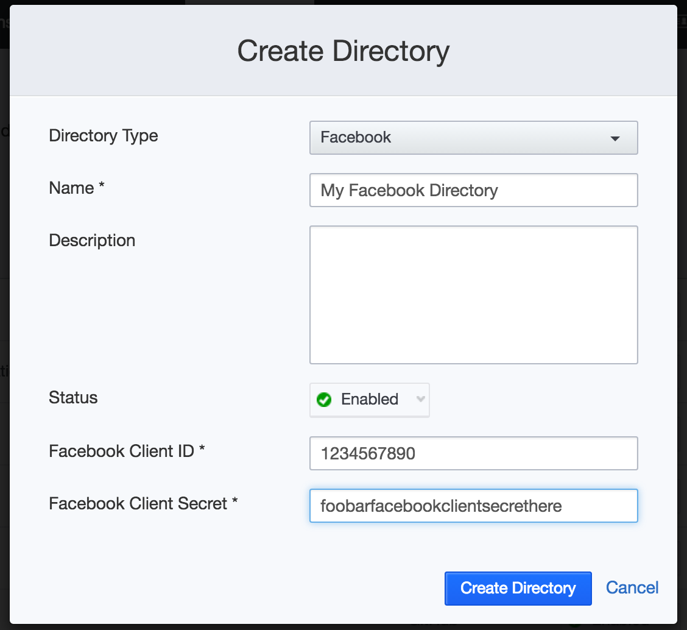
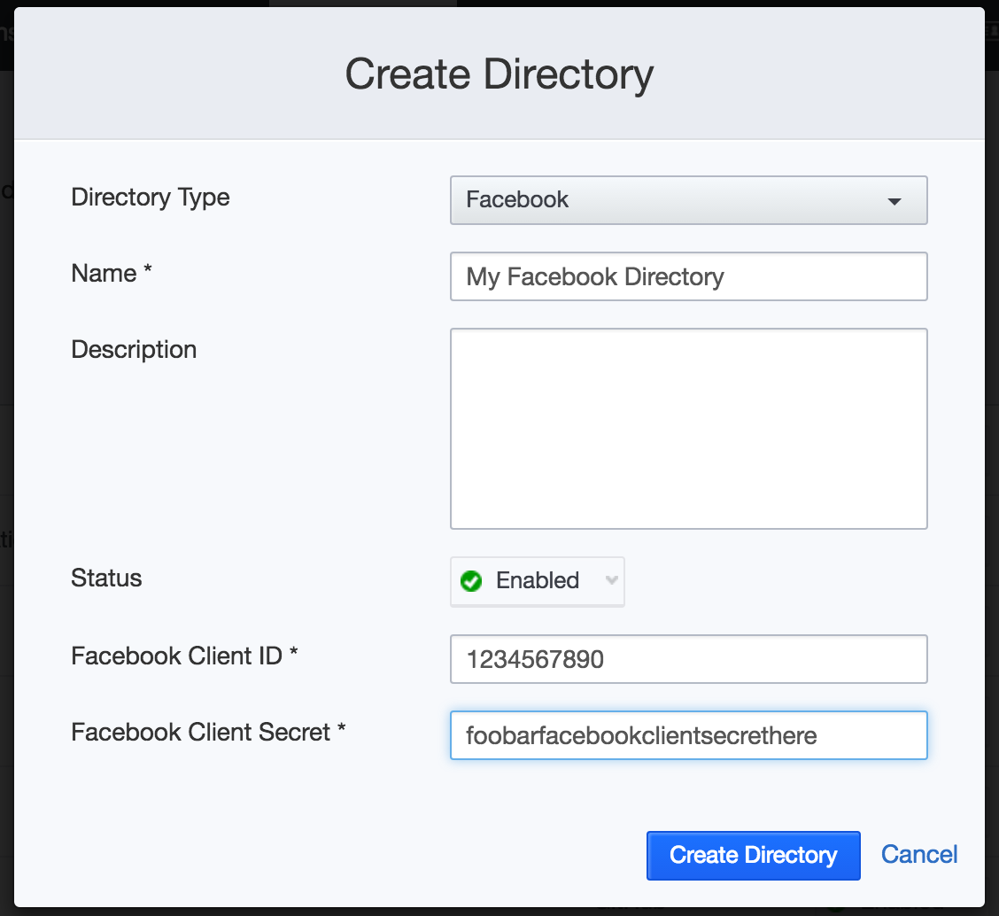

Do you want users to authenticate with a social provider, such as Facebook?
Stormpath provides integrations with the following services:
Overview
Setting up social login in your Stormpath-powered application is easy. Follow the steps in the appropriate section below to set up the external provider and configure a Social Directory in the Stormpath Admin Console. Then, map the new Social Directory to your existing Stormpath Application.
Once the Social Directory is mapped, your ASP.NET application is ready to go! If you are using the included default views, the appropriate buttons will appear on the login route automatically.
When users log into your application with a social provider, they will be redirected to one of two locations:
- If the user has never logged in before (a new account), they will be redirected to the location set of the
nextUri option in the registration route configuration.
- If the user is a returning account, they will be redirected to the location set in the
nextUri option of the login route configuration.
Setting up Facebook Login
To use Facebook Login you must:
- Create a Facebook Application through their Developer site.
- Configure a Stormpath Social Directory with the Facebook Application credentials.
Create a Facebook Application
First, log into the Facebook Developer Site and
create a new Facebook App. You can do this by clicking the “Apps” menu at the top of the screen, then select the “Create a New App” button. You should see something like the following:

Go ahead and pick a “Display Name” (usually the name of your app), and choose a
category for your app. Once you’ve done this, click the “Create App” button.
todo: Make a note of the App ID and App Secret. You’ll need those later when you connect your Facebook Application to Stormpath.
Specify Allowed URLs
The next step is to tell Facebook what URLs we’ll be using Facebook
Login from.
From the app dashboard page you’re on, click the “Settings” tab in the left
menu, then click the “Add Platform” button near the bottom of the page. When
prompted, select “Website” as your platform type.
In the “Site URL” box, enter your private and public root URLs. This should be
something like http://localhost:5000 or http://mysite.com. If you
want to allow Facebook Login from multiple URLs (local development, production,
etc.) you can just click the “Add Platform” button again and enter another URL.
Lastly, click the “Save Changes” button to save the changes.
Your settings should now look something like this:

Create a Facebook Directory
Now that you’ve created a Facebook Application, you need to create a Stormpath Social Directory that contains the Facebook Application credentials. This allows Stormpath to interact with the Facebook API on your ASP.NET application’s behalf.
To do this, visit the Stormpath Admin Console and click on Directories in the navigation bar. Click “Create Directory” and choose Facebook as the Directory type. Next, enter the following information:
- Name: Any descriptive name for the Directory.
- Facebook Client ID: Insert your Facebook App ID from the previous steps.
- Facebook Client Secret: Insert your Facebook App Secret.
Your Directory configuration should look like this:

Click “Create” to finish creating the Directory.
Mapping the Directory
The new Facebook Directory needs to be associated (mapped) to your existing Application as an Account Store. This can also be done from the Stormpath Admin Console.
To do this, click on Applications in the navigation bar, and select your Application from the list. On the details page, click on Account Stores on the left side. Next, click “Add Account Store” and pick the new Facebook Directory you created. Click “Create Mappings”.
That’s it!
Testing Facebook Login
Now that you’ve connected your Facebook Application to Stormpath, you’re ready to test your ASP.NET application.
Restart ASP.NET (if it’s running) and try visiting the login page (/login) in your browser. If you’re using the default views included with this library, you should see the following:

Try logging in! When you click the Facebook button you’ll be prompted to authorize the application using your Facebook account:

After authorizing, you’ll be redirected back to your website. If you’ve never logged into this application with Facebook before, you’ll be redirected to the nextUri set in the registration route configuration. If you have logged into this application with Facebook before, you’ll be redirected to the nextUri set in the login route configuration.
Social Login¶
Do you want users to authenticate with a social provider, such as Facebook? Stormpath provides integrations with the following services:
Overview¶
Setting up social login in your Stormpath-powered application is easy. Follow the steps in the appropriate section below to set up the external provider and configure a Social Directory in the Stormpath Admin Console. Then, map the new Social Directory to your existing Stormpath Application.
Once the Social Directory is mapped, your ASP.NET application is ready to go! If you are using the included default views, the appropriate buttons will appear on the login route automatically.
When users log into your application with a social provider, they will be redirected to one of two locations:
nextUrioption in the registration route configuration.nextUrioption of the login route configuration.Setting up Facebook Login¶
To use Facebook Login you must:
Create a Facebook Application¶
First, log into the Facebook Developer Site and create a new Facebook App. You can do this by clicking the “Apps” menu at the top of the screen, then select the “Create a New App” button. You should see something like the following:
Go ahead and pick a “Display Name” (usually the name of your app), and choose a category for your app. Once you’ve done this, click the “Create App” button.
todo: Make a note of the App ID and App Secret. You’ll need those later when you connect your Facebook Application to Stormpath.
Specify Allowed URLs¶
The next step is to tell Facebook what URLs we’ll be using Facebook Login from.
From the app dashboard page you’re on, click the “Settings” tab in the left menu, then click the “Add Platform” button near the bottom of the page. When prompted, select “Website” as your platform type.
In the “Site URL” box, enter your private and public root URLs. This should be something like
http://localhost:5000orhttp://mysite.com. If you want to allow Facebook Login from multiple URLs (local development, production, etc.) you can just click the “Add Platform” button again and enter another URL.Lastly, click the “Save Changes” button to save the changes.
Your settings should now look something like this:
Create a Facebook Directory¶
Now that you’ve created a Facebook Application, you need to create a Stormpath Social Directory that contains the Facebook Application credentials. This allows Stormpath to interact with the Facebook API on your ASP.NET application’s behalf.
To do this, visit the Stormpath Admin Console and click on Directories in the navigation bar. Click “Create Directory” and choose Facebook as the Directory type. Next, enter the following information:
Your Directory configuration should look like this:
Click “Create” to finish creating the Directory.
Mapping the Directory¶
The new Facebook Directory needs to be associated (mapped) to your existing Application as an Account Store. This can also be done from the Stormpath Admin Console.
To do this, click on Applications in the navigation bar, and select your Application from the list. On the details page, click on Account Stores on the left side. Next, click “Add Account Store” and pick the new Facebook Directory you created. Click “Create Mappings”.
That’s it!
Testing Facebook Login¶
Now that you’ve connected your Facebook Application to Stormpath, you’re ready to test your ASP.NET application.
Restart ASP.NET (if it’s running) and try visiting the login page (
/login) in your browser. If you’re using the default views included with this library, you should see the following:Try logging in! When you click the Facebook button you’ll be prompted to authorize the application using your Facebook account:
After authorizing, you’ll be redirected back to your website. If you’ve never logged into this application with Facebook before, you’ll be redirected to the
nextUriset in the registration route configuration. If you have logged into this application with Facebook before, you’ll be redirected to thenextUriset in the login route configuration.Setting up Google Login¶
Note
Detailed instructions for setting up Google login are coming shortly! If you need help in the meantime, please reach out to support@stormpath.com.
Setting up Github Login¶
Note
Detailed instructions for setting up Github login are coming shortly! If you need help in the meantime, please reach out to support@stormpath.com.
Setting up LinkedIn Login¶
Note
Detailed instructions for setting up LinkedIn login are coming shortly! If you need help in the meantime, please reach out to support@stormpath.com.